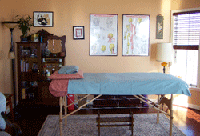

About Treatment
Acupuncture treats people and not disease. In order to provide the best possible care for you, a comprehensive understanding of your symptoms must be drawn. To do this, your first visit will consist of a two hour in-depth medical and social health history, and physical examination. You are free to ask as many questions as you need.
HIPPA laws require that all information you share be held as strictly confidential. In the privacy of my office, you can be sure that nothing you say will be shared outside of that room without your written permission.
Initially, you will be seen weekly in order to create an internal harmony, which can be maintained between treatments. The longer an illness has been present, or the deeper it has penetrated, the more treatments you will need.
Acupuncture needles are very slender, barely beyond the thickness of a human hair. The finest quality stainless steel, pre-sterilized, disposable needles are used. Most insertions are made just beneath the skin’s surface, and sensations vary from person to person. Sometimes a person feels nothing at all, or perhaps a dull, momentary ache or tingling sensation. An herb called moxa is sometimes applied as well.